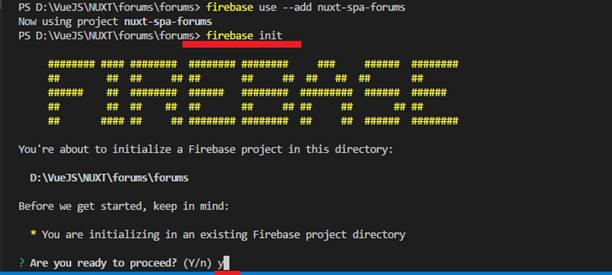
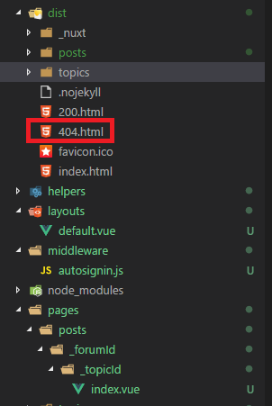
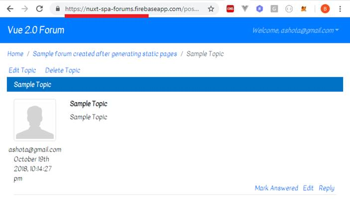

Demo link Nuxt.js Single Page (SPA) link: https://nuxt-spa-forums.firebaseapp.com/
Demo link Nuxt.js Static Generated link: https://nuxt-static-forums.firebaseapp.com/
Video link: https://youtu.be/33WeNhsAcBk
Application Description Page: https://ashot72.github.io/Nuxt2Forum/description/index.html
Git Repository: https://github.com/Ashot72/Nuxt2Forum
Nuxt.js https://nuxtjs.org/guide/ is a framework for creating Vue.js applications, and you can choose between
Universal, Static, or Single Page application. This application was originally created using Vue2.js
https://github.com/Ashot72/Vue2Forum. I converted the app and it is functioning exactly the same way using Nuxt.js.
Note, that you can run the app on all three modes both Universal, Static and Single Page without changing a single line of code!
Universal Mode
Figure 1
The command will run the app in Universal mode locally. You can open it by navigating http://localhost:3000
We ran the application in development mode.
Figure 2
Note, Universal is the default mode specified in nuxt.config.js file when creating a project.
In this mode we build a project which must run in Node.js server. First it is dynamically rendered on the server
and after the first load the application turns into the Single Mode (SPA) application. This is great for Search Engine Optimization (SEO).
As the page is rendered on the server without having to wait for all the JavaScript to be downloaded it ensures that users can still enjoy the fast speed provided by Server-Side Rendering.
Figure 3
Let's 'View Page source'.
Figure 4
The page is prerendered on the server on the fly upon requesting it. After it we are back in Single Page
Application world. In general, we created a normal vue.js app which was prerendered dynamically by Nuxt.js in Universal mode.
Figure 5
I clicked 'SharePoint 2013' link on the main page (Figure 3) and navigated to topics page.
Figure 6
I viewed the page source 'View Page source' without refreshing the topics. Nuxt.js server side rendered topics page.
Nuxt.js not only renders the initial page but all pages we navigate. It takes over and handles all future navigation actions and future re-rendering it needs to do.
Figure 7
'npm run build' generates files for production.
Figure 8
We have our optimized code in .nuxt/dist folder after the build is finished.
Figure 9
We run the production mode via 'npm start'.
Figure 10
App is running on production mode in http://localhost:3000
You should select a hosting provider which web server runs Node.js version 8.x or higher such as Heroku or AWS etc.
Depending on the provider you might not need to upload the node_modules folder because the npm install command
will be run automatically.
Single Page Application (SPA) Mode
Figure 11
npm run dev with spa option will run the app in Single Page Application mode.
Figure 12
The app is Single Page Application mode and you do not have any pre-rendering. Nothing gets rendered on the server.
This is not good for SEO if you need to load some asynchronous data before rendering something in the
screen and you have a problem. Google crawler is not going to wait for your content to be loaded. It just sees the entry
page. Nuxt.js app is the same as my Vue.js Forum created before https://github.com/Ashot72/Vue2Forum
but with Nuxt.js spa mode you benefit from simplified development, automatically inferred routing and all these Nuxt.js features.
Figure 13
Usually people change the mode in nuxt.config.js file from universal to spa in order to build the app in Single Page mode. We will not
to do that way. We should not change a file in the app and the mode should always be universal.
Figure 14
We run the build command with spa option and generate Single Page Application though the mode is still universal in nuxt.config.js file.
Figure 15
Before running the build command above, I commented out generate object section in nuxt.config.js. We should not do it as with generate object spa will be
generated without a problem. I promised we should not change any file in the project. We will back to this point later but now let's comment it out.
Figure 16
The output is different as compared to universal mode. We will not get these .nuxt folder which has some supporting files for our environment but
a brand-new folder instead. It is dist folder. dist folder's content can be deployed to a static host such as Firebase hosting or GitHub pages.
You can also install an extra server to test our application on a static host.
Figure 17
Globally install http-server which is a light weight node server you can run any folder on your machine to serve it.
Figure 18
Navigate into dist folder.
Figure 19
This spins up a server on localhost 8080. Let's visit it now.
Figure 20
The app is running on localhost:8080. In order to access to topics page a user has to be authenticated. You can either sign in or sign up.
Figure 21
Trying to sign in.
Figure 22
I am on topics page. Let's refresh the page.
Figure 23
You see localhost page can't be found. We refreshed the browser and sent a new request to server which we run does not know
this route. The routes are stored in the view router in our application which never gets a chance to run if we refresh the page and
the server blocks that. When we deploy a single page application we need to ensure that we set our server up to always return the
index.html file in case of server side 404 errors.
Let's push our Single Page Application to firebase.
Go to https://firebase.google.com/ then to your console and create a project.
Figure 24
I created nuxt-spa-forums project
Figure 25
After you built the project with spa option, install firebase tools globally. Make sure you are out of dist folder.
Figure 26
Run firebase login. It will open a browser for you to login.
Figure 27
I successfully logged on.
Figure 28
Adding the project.

Figure 29
Run firebase init then type y to proceed.
Figure 30
Select 'Hosting' option then click Enter.
Figure 31
Type dist as we serve our files from dist folder.
Figure 32
For single page app option type Yes and for Overwrite No. You see that in forebase.json file rewrites section generated.
Our single page application will always serve index.html file in case of server side 404 errors.
Figure 33
Run firebase deploy. You see the hosting link was generated. Click on it to navigate to the page.
Figure 34
Our single page application is running on Firebase static-host. Let's login and navigate to topics page.

Figure 35
I am on topics page. By viewing the page source, you can see that it is not Server-Side rendered. Refresh the page and you will be on the same page.
No errors!
Static Mode
In this mode Nuxt.js generates the entire app as static files which we can be deployed to a static host during or after development. In order to do it we should make sure that we are on universal mode as we are. In this mode it progenerates all our files.
Figure 36
You remember we commented out generate section. Let's uncomment it.
Figure 37
Run npm run generate command. This will build the code and pre-generate all pages and give you a folder for each page and index.html files.
Figure 38
In dist folder we have subfolders for different pages and index.html files for each one of them.

Figure 39
If you inspect them you will see it is optimized and all data are there.
Let's deploy static pages to Firebase hosting.
Figure 40
I created nuxt-static-forums project.
Figure 41
We are starting the same way as we did for Single Page Application case.
Figure 42
This time for single page option you should select No as it is a not a single page application. 404.html has been added by Firebase.
Figure 43
Note, we do not have rewrites section in firebase.json file (Figure 32). It is not required in static pages case.

Figure 44
Finally, we ran the last command firebase deploy. Hosting URL was generated to navigate.
Figure 45
We can load our starting page and see forums that has been pre-generated. Every possible entry point has been pre-generated.
Figure 46
If we then click around, say topics link, we are back in a single page application which is important. Now, we do not send real requests and
get back to real pages. This is pretty amazing because with that we got the best of both worlds. We got search engine optimization application because
everything is pre-generated and all the HTML files with all the content are there for the crawlers to be consumed. You do not need on the fly
page pre-rendering on the server, hence you don't need Node.js server and static-host is all you need and you still have a single page application.
Figure 47
You remember that when we built the project for Single Page Application we commented out generate section (Figure 14 and Figure 15).
This time I ran the command with generate without the comment. If you compare the previous result Figure 16 with this one you will see
that in dist folder we have posts and topics section. This is because static pages are generated as well. Though posts and topics folders are there
they do not have any impact on Single Page Application. Pushing dist folder with those folders to a hosting will
not do any harm at all. They are simply ignored. I commented out generate object before to show the clean dist folder output in
Single Page Application mode (Figure 16). So, without changing a single line we could ran it on three modes.
Figure 48
Creating a new forum on nuxt-static-forums Firebase hosting.
Figure 49
The forum is generated
Figure 50
After the page refresh the forum disappeared.
Figure 51
The reason is that the newly added forum was not pre-generated when we pushed the dist folder to our hosting.
Figure 53
Let's click on Vue.js forum and navigate to topics page.
Figure 53
We are on topics page. Click Home to go back to forums page.
Figure 54
This time you see the forum as we are in Single Page Application mode navigating from topics back to forums and forums are retrieved from Firebase database.
Figure 55
Create a new topic in our newly created forum.
Figure 56
Click Sample Topic link to navigate to posts page.
Figure 57
Refresh the post page.
Figure 58
The page breaks as it is not staticky generated. The same is true with topics page. The application will work on Single Page Mode though (Figure 54)
In order to work properly you have to regenerate your pages when your dynamic content changes. It can be also set up as a dynamic automated process.

Figure 59
404 Page Not Found error message is coming from 404.html file generated by Firebase which can be modified.

Figure 60
Newly generated post will not break in Single Page Application mode and the post will be retrieved from Firebase database.
Figure 61
So, we have Single Page Application which is not server-side rendered and deployed to https://nuxt-spa-forums.firebaseapp.com
Figure 62
and Static Website which is server-side rendered and deployed to https://nuxt-static-forums.firebaseapp.com